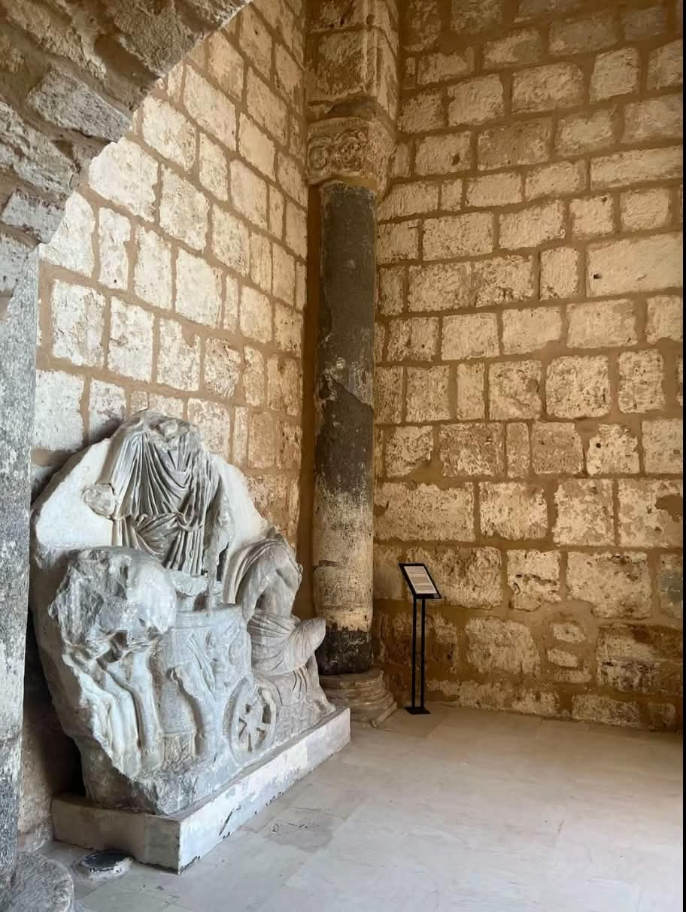

Le musée est installé dans la casbah de Sousse, forteresse du XIe siècle construite sur les remparts de la médina. Créé en 1951, il a rouvert en 2012 après sa restauration.
Voir sur la carteLe musée possède la deuxième plus grande collection de mosaïques de Tunisie, après le Bardo. Elles viennent de Sousse et de ses environs et datent surtout des IIe et IIIe siècles.
Parmi les plus célèbres : le triomphe de Bacchus, l’enlèvement de Ganymède par Zeus changé en aigle, la toilette de Vénus et le triomphe de Neptune. Le musée expose aussi des statues et des objets funéraires.

Le jardin et la terrasse de la casbah offrent une vue panoramique sur la médina et le port.